Первый взгляд на MacBook Pro 14
У меня в руках оказалась базовая версия ноутбука.
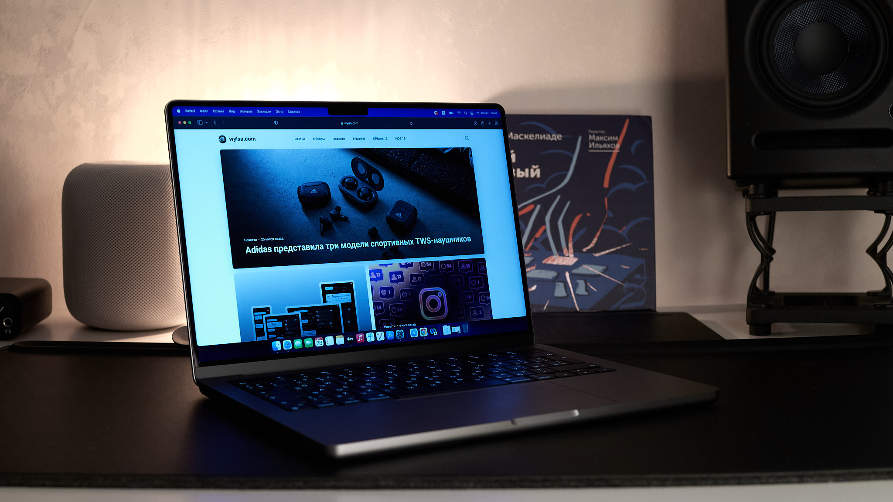
Как только показали новые MacBook Pro на собственных системах-на-чипах Apple M1 Pro и M1 Max, я понял, какой из ноутбуков мне нужен. Понял и горько вздохнул: курс рубля такой себе, а 275 тысяч на нужную мне версию на дороге не валяются.
Но отбросим мечты и хотелки. Пока мне лишь удалось посидеть пару часов за самым дешёвым MacBook Pro 14:
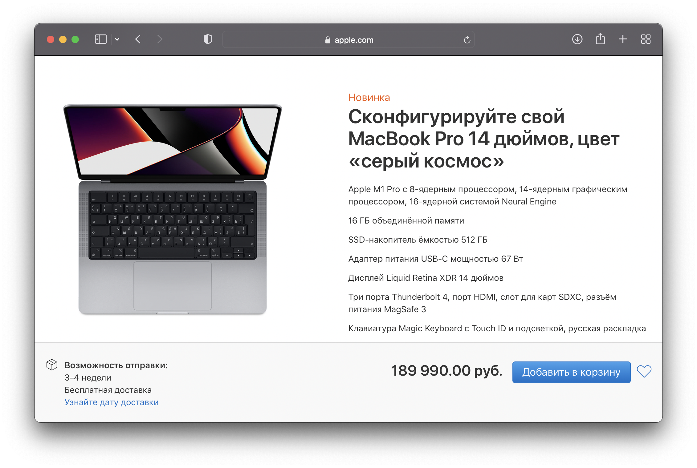
Этот текст — самые первые впечатления о новом ноутбуке. Тут не будет выводов о производительности — на это нужно гораздо больше времени. Основываясь на первом впечатлении, я постараюсь ответить на важный для себя вопрос: стоит ли его покупать?
Впечатление первое: вес
Мне нужен относительно лёгкий компьютер, который я могу закинуть в рюкзак и улететь куда подальше — работа позволяет мне это делать довольно часто, чем я нередко пользуюсь. «Шестнашка» под эти условия не подходит — она весит 2,15 кг! А вот 14-дюймовая версия — 1,61 кг.
Мой постоянный стафф такой: дома я работаю на MacBook Pro 15 2015 года. Там MagSafe, слот под SD-карту, HDMI, которым я воспользовался два раза за пару лет, а также самое топовое железо. Это старый ноут Вали Wylsacom, который мне перешёл «по наследству» от нашего оператора дяди Жени. Отличный ноутбук, если бы не вес и размеры — всё-таки он не для мобильных путешествий.
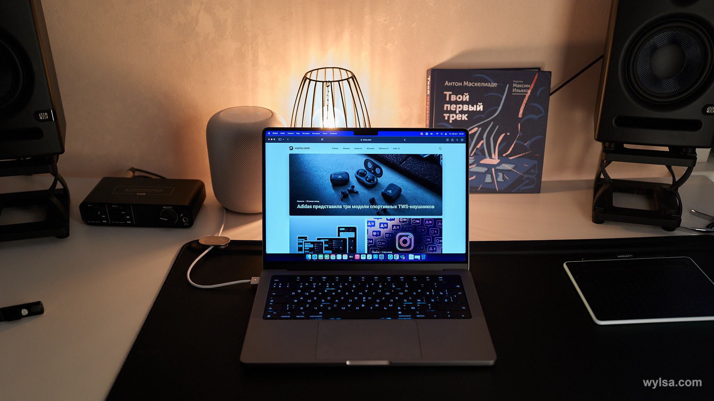
В командировках, поездках на родину и в путешествиях я пользуюсь четырёхлетним MacBook Air. Но он уже не вывозит. На нём трудно обрабатывать фото, подключение внешнего экрана приводит к тому, что компьютер просто перестаёт отвечать на запросы.
Поэтому на MacBook Pro 14 я смотрел как на идеальный вариант для дома и путешествий. Фотографии занимают много места, поэтому нужен SSD на терабайт. Чтобы ноутбука точно хватило на несколько лет, я хочу 32 ГБ объединённой памяти.
Но вот вес ноутбука меня не обрадовал. Даже мой MacBook Air 2018 года пусть и лёгкий, но тоже иногда тянет спину. Особенно если ходишь с тяжёлым рюкзаком часов восемь по какому-то городу. Поэтому взяв в руки новый 14-дюймовый MacBook Pro, я задумался: станет ли он тем универсальным рабочим компьютером для дома и путешествий, о котором я грезил?
Владельцам прошлых 13-дюймовых «прошек» также стоит задуматься о весе, поскольку преемник этих ноутов «потолстел» граммов на двести до 1,61 кг.
Впечатление второе: дизайн
Впечатление второе: дизайн
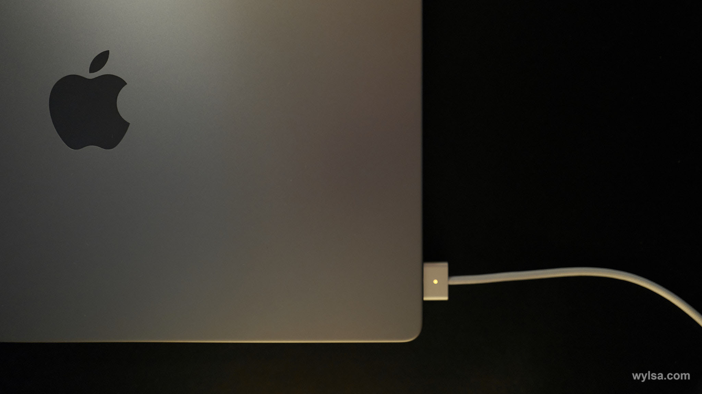
В интернете я видел реакцию многих на видео первых распаковок. Мол, новые макбуки выглядят как китайская подделка. Согласиться не могу. Выглядят они на все уплаченные деньги. Никакой дешевизны тут нет. Собраны также отлично.
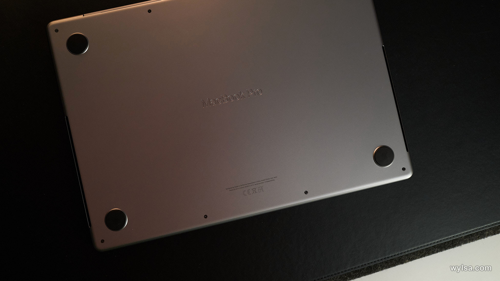
Чёрная подложка чёрной клавиатуры выглядит очень круто и по-современному. Но эта же подложка меня сильно смутила, когда я начал вводить свои логины и пароли. Из-за огромного количества символов и отсутствия видимого разделения клавиш глаза запутывались и мозг стопорился. Вслепую же печатать очень удобно. Даже так: эта клавиатура типа «ножницы» тактильно мне напоминала «бабочку», которая, на мой вкус, была самым крутым решением для печати длинных текстов (но, к сожалению, далеко не самым надёжным).
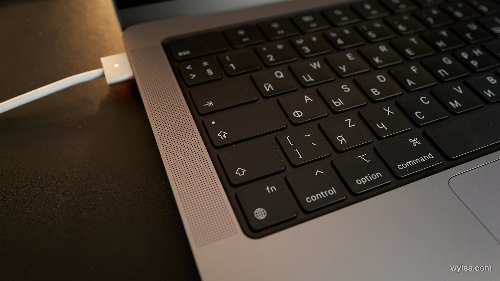
Экран с такими тонкими рамками выглядит просто топ! Конечно, это мы видели и на MacBook Pro 16 2019 года, и на Windows-ноутбуках. Наконец-то получили и на маленьком макбуке.
«Монобровь». Она есть. Спустя две минуты про неё забываешь. Полагаю, ругаются на неё те же, кто ругался на «монобровь» айфонов, не пользуясь айфоном.
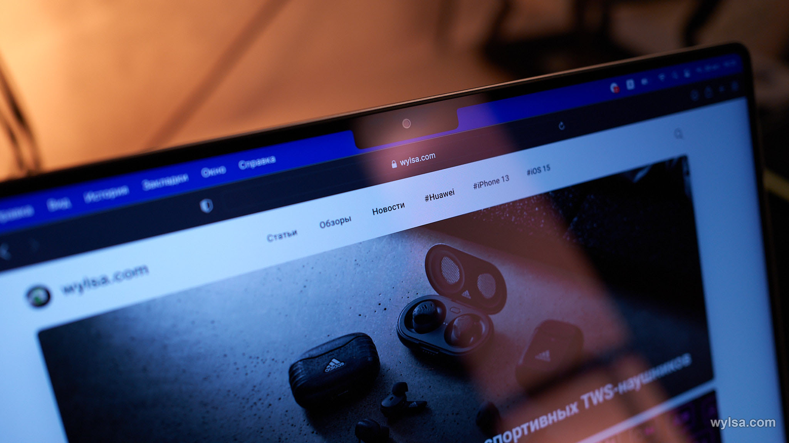
Впечатление третье: громкий звук
Ноутбук очень громкий. В хорошем смысле этого слова. Вы смотрите видео, слушаете музыку — никаких ограничений нет. Нет перегрузов, грязи. У звука есть объём, провала по частотам нет.
При этом у новой «шестнашки» звук ещё лучше, ещё громче. Мы сидели в студии, и Валя включил какой-то ролик. Я сначала не поверил, что это ноутбук.
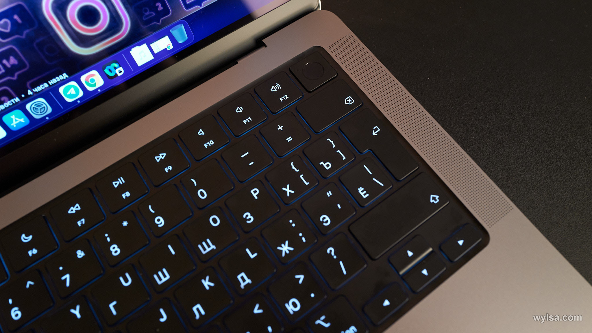
Сейчас я включил «Теда Лассо» и увлёкся, хоть и посмотрел оба сезона. Звук очень крутой. Мне даже горько, что у моей «пятнашки» 2015 года звук очень посредственный и без внешних колонок там не обойтись. Тут же макбук можно использовать без посторонней акустики.
В общем, на мой взгляд, звук производит самое сильное впечатление на пользователя нового MacBook Pro 14.
Впечатление четвёртое: тихий звук
Ноутбук очень тихий. В хорошем смысле этого слова. Я решил проверить производительность ноутбука. Запустил графический редактор для обработки фотографий Capture One, закинул туда 359 RAW, снятых на Fujifilm GFX100S. Каждая из этих «равок» весила более 200 МБ.
C1 полностью загрузил эти фотографии за восемь минут, затем я быстро сделал какую-то обработку и выгрузил 28 фотографий в оригинальном разрешении 11 648 × 8736 пикселей в jpeg.
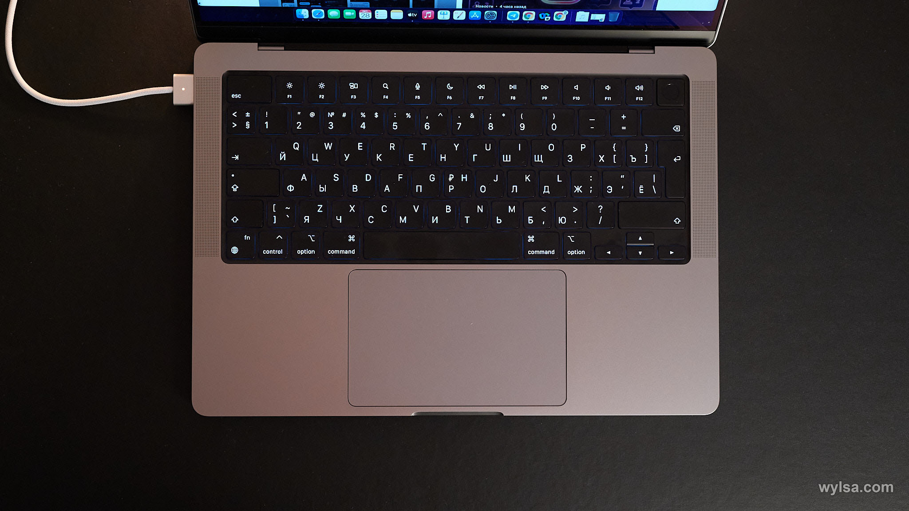
Экспорт 28 фотографий занял менее двух минут. Это очень быстро. И это, бесспорно, круто. Но круто и то, что ноутбук в этот момент просто тихо выполнял свою работу. Он не запустил кулеры, стойко оставаясь холодным. Сумасшествие какое-то!
Впечатление пятое: разъёмы
Я очень хотел, чтобы в макбуки вернулись разъёмы для SD-карт. Наконец-то. Да, к сожалению, это оказался не самый быстрый вариант. Как оправдать Apple, мне неизвестно. Но я всё равно очень рад вернувшимся картам.
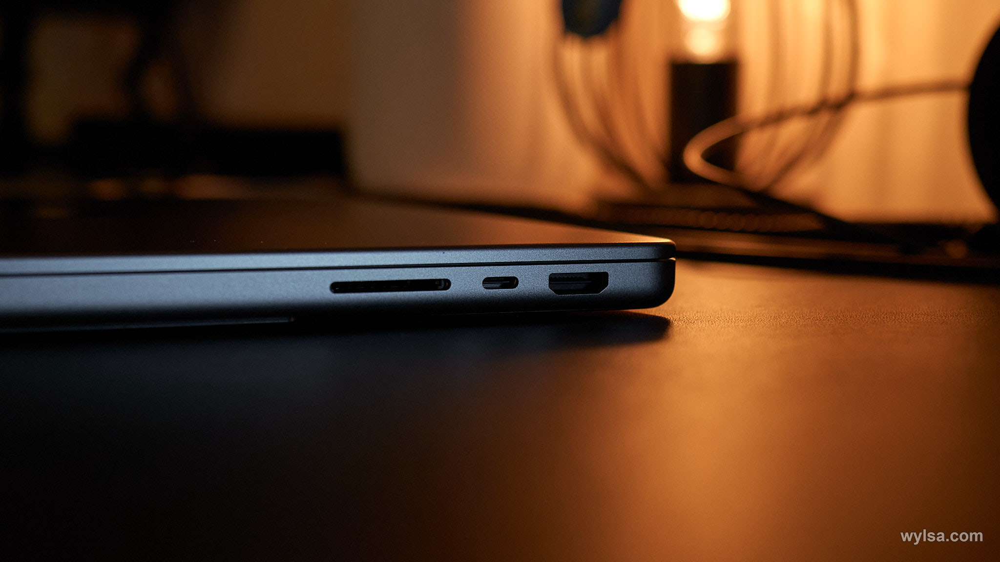
Но самая топовая вещь — MagSafe. Ох, какая классная зарядка у меня в MacBook Pro 15 2015 года! Легко прикрепляется на магните, ноутбук не рискует улететь со стола, если случайно потянуть за провод. И тут MagSafe вернулся. Тянешь его быстро — он отключается. Тянешь медленно — он тянет за собой ноутбук. Крепление очень надёжное.
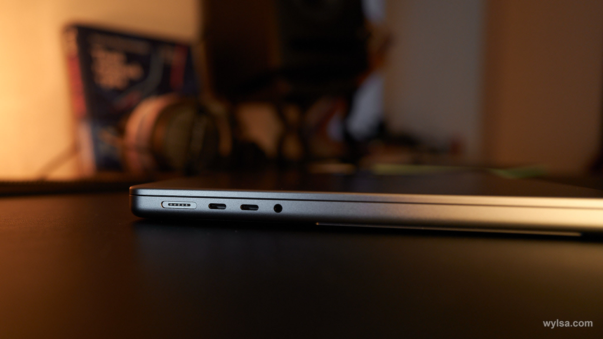
Также ноутбук спокойно заряжается от Thunderbolt-портов. Но для этого нужно будет купить отдельные кабели USB Type-C.
HDMI я не пользуюсь и совсем не понимаю, зачем он нужен в ноутбуке. Вероятно, кто-то объяснит в комментариях.
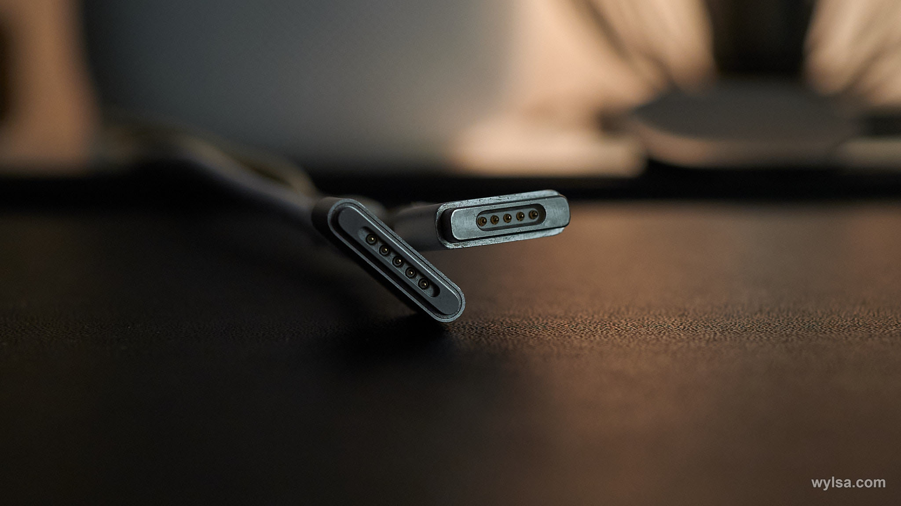
Итоги
Как вы можете заметить, тут нет ответа на вопрос про производительность и работу батареи. Дело в том, что нескольких часов для понимания этих моментов будет недостаточно. Могу сказать, что в первый день с 8:30 утра до 15:00 батарея села с 63% до 21 % — но в этот же день я начал с активации ноутбука. В первые дни расход никогда не будет адекватным из-за всевозможной синхронизаций и прочих моментов. Поэтому нужно ещё несколько дней поработать за этим ноутбуком, чтобы понять, что у него с батареей.
Производительность тоже не удалось проверить. Да, я открыл 3,5 сотни тяжёлых «равок», да, компьютер сделал это очень быстро. Да, на MacBook Pro 2017 года те же 28 «равок» экспортируются в три раза медленнее. Но это всё ещё плохой ответ на вопрос «что там с производительностью». Нужно гораздо больше времени.
В целом, как я и ожидал, Apple выпустила действительно крутой ноутбук с потрясающим дисплеем и с отличной производительностью. Его мощностей хватит почти всем, кому M1 было недостаточно.